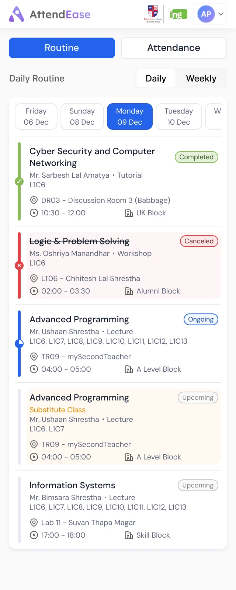
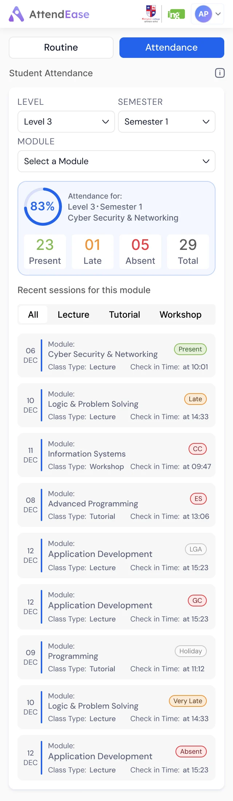
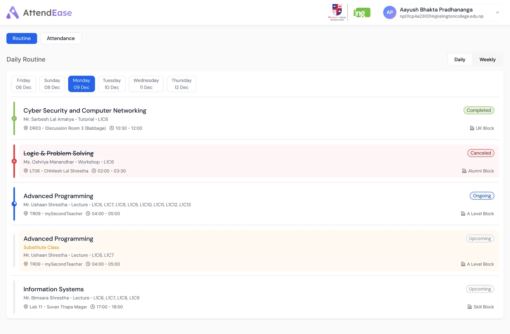
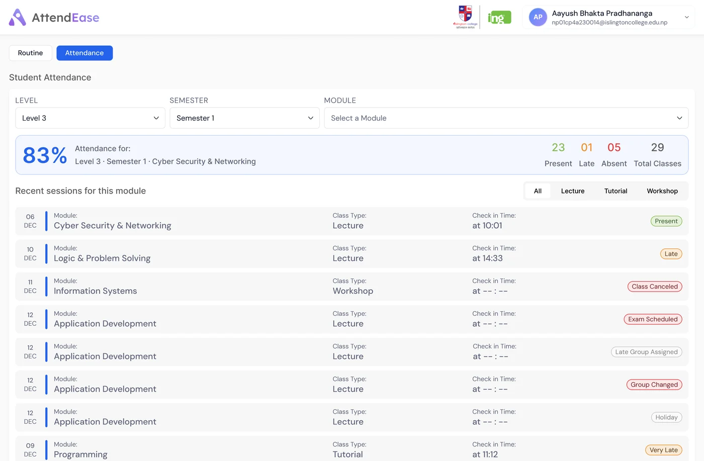

Where do I need to be, and am I keeping up?


The admin side of AttendEase has nineteen pages in its menu. The student side has two buttons. Each one answers a question a student actually asks, and nothing else gets in the way.
My reading of the two-tab layoutEach class hangs off a coloured rail with a marker. Green with a tick is done, blue half-filled is happening now, grey is still to come. A cancelled class is struck through on pink, and a substitute is called out on amber.

The list on the left is rebuilt from the Monday 09 Dec screen. Times and names are as they appear in the design.
The weekly view stacks six days of cards. Each module keeps one stripe colour all week, and a small chip says whether it's a lecture, tutorial or lab. Pick a module to see where it falls.
Rebuilt from the weekly screen, 08 to 13 Dec. The amber card is a substitute class.
The module summary reads 83% from 23 present, 1 late and 5 absent out of 29. That only adds up if the late class counts: 24 of 29 is 82.8%, while 23 of 29 would be 79%. The number on screen quietly answers the question students worry about most.
Worked out from the figures on the screen23 present + 1 late = 24 of 29
Each recent session carries a status badge. Present and late are only the start: a class can be cancelled, swapped for an exam, moved to another group or fall on a holiday. On a phone, the longer ones shrink to initials.
On a phone, Routine and Attendance become two full-width buttons. The summary bar folds into a ring and four tiles, session rows stack, and the weekly grid turns into a list of days you can open, each with a class count.

Two tabs, the status rail and the module colours keep the student side light. These are the next fixes.